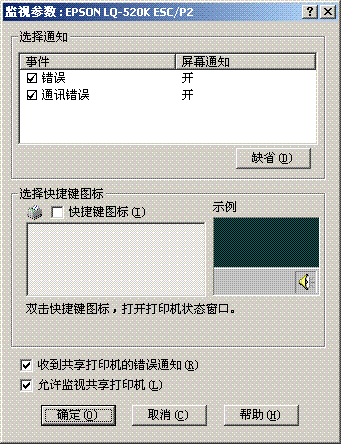
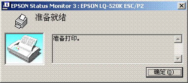

EPSON Status Monitor 3可允许您监视打印机的状态，当打印机发生错误时可报警并在需要时提供排除故障的指导。
 |
|
|||
 |
||||
使用 EPSON Status Monitor 3
在下面情况时可使用EPSON Status Monitor 3:
打印机通过并口[LPT1]或USB端口直接与主计算机连接。
您的系统配置支持双向通讯。
当直接连接打印机到计算机并按《首先阅读》中的描述安装打印机驱动程序时就自动安装了EPSON Status
Monitor 3。 要共享打印机，确保设置EPSON Status Monitor 3，以便在打印机服务器和客户机上能够监视共享打印机。
参见设置EPSON Status
Monitor 3和在网络上设置打印机。
 注意：
注意：|
在Windows 8.1、8、7、Vista或XP中，虽然您可以通过与使用远程桌面功能*的远程位置上的计算机直接相连的打印机进行打印，但是可能会发生通讯错误。
* 远程桌面功能：此功能可使用户从移动计算机访问位于远程位置的与办公网络相连的某台计算机上的应用程序或文件。
|
 注释：
注释：|
如果您正使用的计算机正运行于Windows 8.1、8、7、Vista或XP且多用户登录已打开，当同时监视打印机时，将显示通讯错误。
如果安装EPSON Status Monitor 3带有Windows防火墙功能打开（推荐），可能不能监视共享打印机。
通过添加EEBAgent.exe到防火墙例外列表中可解决此问题。
|
设置EPSON Status Monitor 3
按照下面步骤设置EPSON Status Monitor 3:
 |
对于Windows 8.1或8:
单击开始屏幕上的桌面，移动光标至屏幕的右上角，单击设置，然后单击控制面板，再从硬件和声音类别中单击浏览设备和打印机。 |
对于Windows 7:
单击开始，再单击设备和打印机。
单击开始，再单击设备和打印机。
对于Windows Vista:
单击开始, 单击控制面板，再单击硬件和声音, 然后单击打印机。
单击开始, 单击控制面板，再单击硬件和声音, 然后单击打印机。
对于Windows XP Professional edition:
单击开始，并单击打印机和传真。
单击开始，并单击打印机和传真。
对于Windows XP Home Edition:
单击开始，再单击控制面版，然后单击打印机和传真。
单击开始，再单击控制面版，然后单击打印机和传真。
对于Windows 2000：
单击开始，指向设置，然后单击打印机。
单击开始，指向设置，然后单击打印机。
 |
右击您的打印机图标，单击打印机属性(Windows 8.1、8和7)或属性
(Windows Vista、XP或2000)，然后单击应用工具标签。
|
 |
单击监视参数按钮。 监视参数对话框出现。
|

 |
可用的设置见下面：
|
|
选择通知
|
显示错误项复选框开/关状态。
打开此复选框显示已选择的错误通知。
|
|
选择快捷键图标
|
在任务栏上显示选择的图标。 右侧窗口显示设置样例。 单击快捷图标，您可容易地访问监视参数对话框。
|
|
收到共享打印机错误通知
|
选中此复选框可以接收共享打印机的错误通知。
|
|
允许监视共享打印机
|
当选中此复选框时，共享打印机即可由其他计算机监视。
注释：
您必须作为管理员身份的用户访问Windows。 |
注释：|
单击缺省按钮可将所有的项恢复为缺省设置。
|

访问EPSON Status Monitor 3
进行下面之一可访问EPSON Status Monitor 3：
请双击任务栏上打印机形状的快捷图标。 要将快捷图标添加到任务栏, 请转至应用工具菜单并遵循以下指导。
打开应用工具菜单, 然后单击EPSON Status Monitor 3图标。 要查找如何打开应用工具菜单，请参见使用打印机驱动程序。
当您按上描述访问EPSON Status Monitor 3时，就出现下面打印机状态窗口。

您可以在此窗口中查看有关打印机状态的信息。
注释：|
在打印期间不能获取打印机状态。 在此情况下，单击应用工具标签上的EPSON
Status Monitor3按钮，使用状态窗口仍然打开的打印机。
|